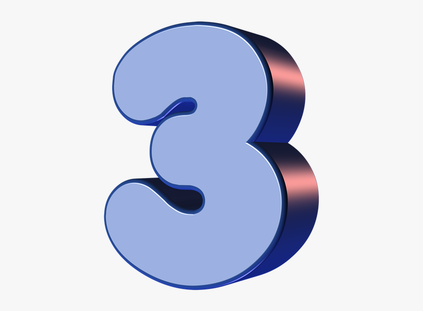

Angka Tiga
Angka tiga telah menjadi simbol universal yang penuh dengan makna dalam berbagai aspek kehidupan manusia. Dari spiritualitas hingga matematika, angka ini memainkan peran sentral dalam merangkum konsep-konsep penting seperti kesatuan, keseimbangan, dan kekuatan trinitas. Mari kita menjelajahi lebih dalam tentang makna filosofis dan implikasi yang terkandung dalam angka tiga.
Dalam banyak kebudayaan dan keyakinan spiritual, angka tiga sering kali dianggap sebagai simbol kesatuan yang sempurna. Ini tercermin dalam konsep-konsep seperti tubuh, jiwa, dan roh; masa lalu, masa kini, dan masa depan; serta bumi, langit, dan alam baka. Angka tiga mengajarkan kita tentang pentingnya menjaga keseimbangan dalam kehidupan dan mencapai kesatuan dalam keberagaman.
Konsep trinitas memainkan peran sentral dalam banyak tradisi keagamaan, termasuk Kristen, Hindu, dan Pagan. Dalam Kekristenan, misalnya, Trinitas Kudus (Bapa, Anak, dan Roh Kudus) adalah fondasi iman Kristen. Ini menggambarkan tiga aspek yang berbeda namun saling berkaitan dari Tuhan yang satu. Konsep yang serupa ditemukan dalam agama-agama lain, mencerminkan keyakinan akan keberadaan entitas ilahi yang kompleks namun satu.
Dari perspektif matematika, angka tiga adalah bilangan prima yang memiliki sifat unik. Ini adalah bilangan terkecil yang lebih besar dari satu dan dapat dibagi oleh satu dan dirinya sendiri. Keunikan matematis dari angka tiga memberikan fondasi bagi berbagai bidang ilmu, dari geometri hingga fisika, di mana konsep-konsep ini memiliki implikasi yang mendalam.
Angka tiga juga mencerminkan ide tentang keseimbangan antara kekuatan. Dalam filsafat, konsep ini dikenal sebagai tesis, antitesis, dan sintesis. Ini menyoroti proses dialektis di mana pertentangan dan konflik diatasi melalui integrasi dan sintesis dari dua elemen yang bertentangan. Dengan memahami dinamika ini, manusia dapat mencapai harmoni dan pertumbuhan yang lebih besar dalam kehidupan mereka.
Secara keseluruhan, angka tiga adalah simbol yang mendalam dan kompleks yang memiliki makna yang luas dalam berbagai aspek kehidupan manusia. Dari spiritualitas hingga matematika, konsep-konsep yang terkandung dalam angka ini mengajarkan kita tentang pentingnya kesatuan, keseimbangan, dan kekuatan trinitas. Dengan memahami makna filosofis di balik angka tiga, manusia dapat mengintegrasikan konsep-konsep ini ke dalam kehidupan mereka dan mencapai kedamaian serta keselarasan yang lebih besar.